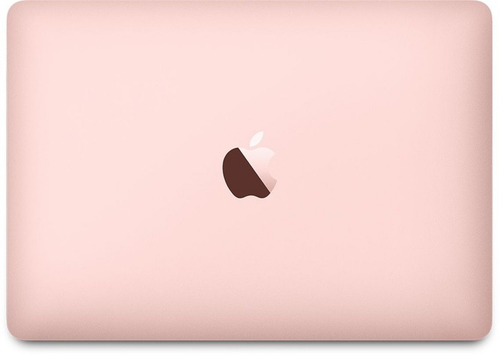

- MacBook
- Macbook air
- Macbook pro
시대를 가볍게 뛰어넘다.

구석구석 더 파워풀하게.
이제 7세대 Intel Core가 탑재되는 MacBook은 그 어느 때보다 날랜 성능을 자랑합니다. 더욱 빨라진 SSD와 최대 처리 속도 3.6GHz의 Turbo Boost 덕분에 앱을 실행하고 파일을 여는 일상적인 일에서부터 더욱 복잡한 컴퓨팅 작업에 이르기까지 어떤 일이라도 거뜬히 해낼 수 있죠.
많은 것을 담기 위해 최소한을 최대한 활용하다.
MacBook 안의 모든 구성 요소는 놀랄 만큼 얇고 가벼운 외장을 최대한 활용할 수 있도록 꼼꼼하게 디자인되었습니다. 강력하면서도 효율성이 우수한 프로세서와 최적화된 macOS는 가능한 한 적은 전력으로 프로세서를 활용합니다. MacBook에는 냉각을 위한 팬이 필요하지 않기 때문에 여유 공간이 남아 더 많은 배터리 셀을 넣을 수 있죠. 덕분에 하루 종일 들고 다니며 쓸 수도 있답니다.
최대
20%
더 빠른 성능
최대 처리 속도
3.6GHz
Turbo Boost
프로세서
MacBook 내부에는 14 나노미터 공정 기술로 제작한 7세대 Intel Core m3, i5, 또는 i7 프로세서가 탑재됩니다. 덕분에 MacBook에는 모든 종류의 작업을 처리할 수 있는 성능과 에너지 효율성이 조화롭게 공존하죠.
팬 없는 아키텍처
MacBook은 소음이 거의 없는 구동을 목표로 제작되었습니다. 프로세서 구동에 필요한 전력이 5W에 불과하여, 발생하는 열이 적어 컴퓨터를 식히기 위한 팬도 필요 없죠. 그 대신 모든 열을 분산시킬 수 있도록 로직 보드를 이방성 흑연 시트 위에 장착했습니다. 아무리 열띤 작업을 하더라도 당신의 MacBook은 그저 고요할 뿐이죠.
저장 장치 및 메모리
MacBook은 내부 부품의 물리적 크기가 아주 작음에도 불구하고 파일 저장 용량만큼은 넉넉히 제공합니다. 매일매일 당신에게 필요한 응용 프로그램을 실행하기에 충분하죠. 최대 16GB의 1866MHz LPDDR3 온보드 메모리와 최대 512GB의 SSD 저장 장치가 놀랄 만큼 얇고 가벼울 뿐만 아니라 성능까지 빠릿한 노트북을 완성합니다.